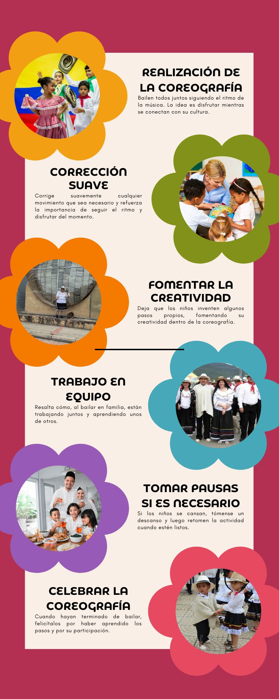
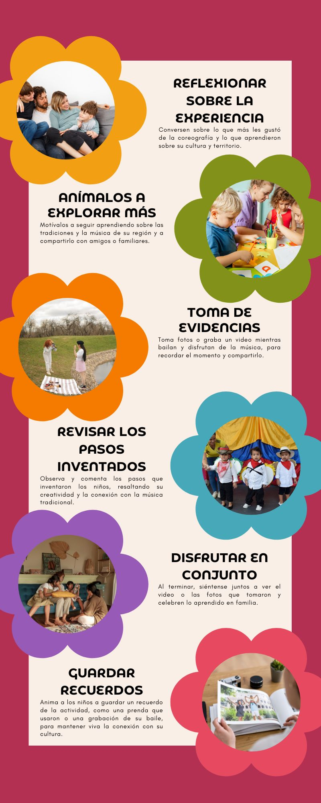
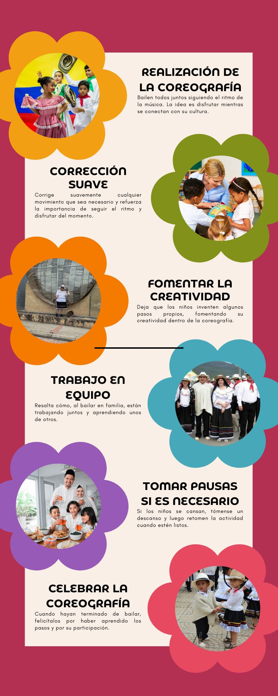
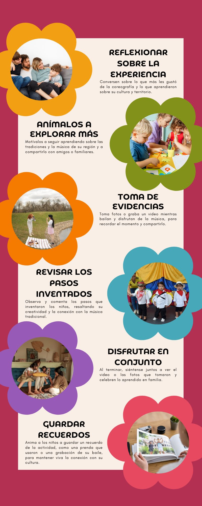

Presentación
El Centro de Desarrollo Infantil (CDI) Rayito de Sol, ubicado en el hermoso Municipio de Tota, presenta con orgullo el proyecto "Pequeños Exploradores: Conociendo y Creciendo", una iniciativa educativa integral diseñada para fomentar el desarrollo holístico de los niños y niñas, desde una temprana edad. Este proyecto tiene como objetivo central proporcionar experiencias pedagógicas que, a través de una serie de actividades interactivas y lúdicas, permitan a los más pequeños descubrir su entorno, desarrollar habilidades fundamentales y crecer de manera saludable en todas las áreas de su vida: cognitivas, emocionales, sociales, sensoriales y motrices.
Cada actividad sigue una secuencia lógica y progresiva que permite a los niños aprender de manera gradual y adquirir nuevas habilidades que complementan las ya desarrolladas en experiencias anteriores. Las infografías y los videos proporcionan instrucciones claras y visuales para que los padres puedan seguir cada paso sin dificultades, asegurando que el aprendizaje se desarrolle en un ambiente lúdico y afectivo.
Ruta de Aprendizaje Completa (con 15 Experiencias Pedagógicas):
1. Experiencia Pedagógica: Recordemos las Enfermedades más Comunes de Nuestros Niños y Niñas
Propósito: Iniciar enseñando a los niños a identificar las enfermedades más comunes que podrían enfrentar. A través de la explicación de signos y síntomas, se fomenta el autocuidado y la prevención.
Inicio del aprendizaje: Es crucial que los niños aprendan a identificar cuando algo está mal en su cuerpo antes de adentrarse en temas más amplios, como normas o actividades sensoriales.
2. Experiencia Pedagógica: Gestión de Riesgos en el Hogar
Propósito: Los niños aprenderán a identificar riesgos en su entorno inmediato (hogar) y a prevenir accidentes como caídas, quemaduras, intoxicaciones, etc.
Conexión: Después de identificar problemas de salud, el siguiente paso es aprender a evitar accidentes y riesgos que podrían causar estas enfermedades o lesiones.
3. Experiencia Pedagógica: "Conociendo los Lugares Representativos de Nuestro Municipio"
Propósito: Enseñar a los niños sobre los lugares importantes de su comunidad, como parques, hospitales y escuelas.
Conexión: Una vez que los niños están familiarizados con los riesgos en el hogar, es importante que también reconozcan los lugares clave de su comunidad, lo que fortalecerá su sentido de pertenencia y seguridad.
4. Experiencia Pedagógica: "Conozco y Reconozco mi Territorio"
Propósito: Fortalecer el conocimiento del entorno inmediato del niño, ayudándole a reconocer los espacios donde interactúa diariamente.
Conexión: Complementa el aprendizaje sobre los lugares representativos, enfocándose en el reconocimiento de su entorno cercano y creando una conexión más personal.
5. Experiencia Pedagógica: "CONOZCO NORMAS, APRENDO LÍMITES"
Propósito: Enseñar a los niños sobre la importancia de las normas y los límites en el hogar y la comunidad, fomentando la convivencia respetuosa y responsable.
Conexión: Después de conocer su entorno, los niños aprenden a comportarse de manera adecuada respetando las normas que rigen tanto en casa como en la comunidad.
6. Experiencia Pedagógica: "Rutinas Diarias con Cuadro de Actividades"
Propósito: Los niños aprenden a seguir rutinas diarias de manera organizada, desarrollando habilidades de planificación y responsabilidad.
Conexión: Una vez que los niños conocen las normas, se les enseña a aplicar esas reglas de forma práctica en su día a día mediante rutinas claras.
7. Experiencia Pedagógica: "Organizando Nuestro Mercado"
Propósito: Los niños aprenden a organizar alimentos y a colaborar en las tareas del hogar, fomentando la responsabilidad y la organización.
Conexión: Esta actividad refuerza la importancia de las rutinas, permitiendo que los niños apliquen lo aprendido al ayudar en la organización de las tareas domésticas.
8. Experiencia Pedagógica: "Organizando Frutas"
Propósito: Desarrollar habilidades de clasificación y organización al separar diferentes frutas, aplicando conceptos básicos de orden.
Conexión: Se refuerza el aprendizaje de la actividad anterior, pero se hace un enfoque específico en la organización y clasificación de objetos, lo que ayuda a la consolidación de esta habilidad.
9. Experiencia Pedagógica: "Cofres Mágicos – Encuentra Nuestro Tesoro"
Propósito: Fomentar el desarrollo del trabajo en equipo y la colaboración al organizar la ropa, diferenciando entre ropa limpia y sucia.
Conexión: Después de organizar frutas y alimentos, los niños pueden aplicar lo aprendido en el contexto de la organización de sus propias pertenencias.
10. Experiencia Pedagógica: "El Cubo Sensorial"
Propósito: Fomentar el reconocimiento de texturas y desarrollar la percepción sensorial a través del juego.
Conexión: Una vez que los niños han aprendido a organizar objetos, esta actividad introduce una dimensión sensorial, que es clave para el desarrollo cognitivo.
11. Experiencia Pedagógica: "Botellas Sensoriales"
Propósito: Desarrollar la percepción sensorial a través del reconocimiento de movimientos y texturas en el agua.
Conexión: Después de trabajar con el cubo sensorial, esta actividad lleva el aprendizaje sensorial un paso más allá, integrando nuevos elementos para mantener el interés del niño.
12. Experiencia Pedagógica: "Reconocimiento de las Emociones en Casa"
Propósito: Ayudar a los niños a identificar y gestionar sus emociones, así como las emociones de los demás, promoviendo el desarrollo emocional.
Conexión: Tras haber trabajado aspectos sensoriales, es momento de integrar el aspecto emocional, ayudando a los niños a reconocer y manejar sus emociones y las de los demás.
13. Experiencia Pedagógica: "Conocer y Reconocer su Motricidad Fina a Través de la Resolución de Problemas"
Propósito: Desarrollar la motricidad fina y la resolución de problemas a través de movimientos precisos y coordinados.
Conexión: Con el desarrollo emocional más afianzado, se complementa el aprendizaje con ejercicios motrices que permiten a los niños afinar sus habilidades físicas.
14. Experiencia Pedagógica: "Lavemos y Colguemos Nuestra Ropa"
Propósito: Fomentar la responsabilidad y la colaboración al enseñar a los niños a lavar y colgar su ropa de manera adecuada.
Conexión: Refuerza la autonomía y la responsabilidad que ya se ha venido trabajando en actividades previas de organización.
15. Experiencia Pedagógica: "Desinfectando mis Manos"
Propósito: Enseñar a los niños la importancia de la higiene personal, específicamente el lavado de manos para prevenir enfermedades.
Conexión: Esta actividad cierra el ciclo de aprendizaje con el refuerzo de la higiene personal, una habilidad esencial que se conecta con la primera infografía sobre las enfermedades comunes, creando una continuidad en el autocuidado.
Recordemos las enfermedades mas comunes de nuestros niños y niñas
Objetivo: Detectar las enfermedades principales en nuestros niños y niñas
_page-0001.jpg)
_page-0002.jpg)
Gestión de Riesgos en el Hogar
Objetivo: Los niños aprenderán a identificar riesgos en su entorno inmediato (hogar)
y a prevenir accidentes como caídas, quemaduras, intoxicaciones, etc.


Conociendo los lugares representativos de nuestro municipio
Objetivo: Explica que la actividad ayudará a los niños a conocer y reconocer los lugares más importantes de su comunidad,
como la biblioteca, el parque y otros espacios que pueden disfrutar.


Conozco y Reconozco mi Territorio
Objetivo: Fomentar en los niños y niñas el reconocimiento de su territorio y la importancia de sus tradiciones
utilizando elementos culturales y música autóctona para crear un espacio de aprendizaje a través del movimiento y la interacción familiar.
 



Conozco normas, Aprendo Límites
Objetivo: Ayudar a tus hijos a reconocer las normas y límites en casa,
fomentando el buen trato y el respeto entre los miembros de la familia.


Rutinas Diarias con Cuadro de Actividades
Objetivo: Ayudar a los niños a entender la importancia de seguir una rutina diaria en casa,
fomentando la organización y la responsabilidad en sus actividades diarias.
Organizando Nuestro Mercado
Objetivo: Enseñar a los niños a organizar los alimentos en casa de manera divertida,
fomentando el orden y la responsabilidad, para que en un futuro puedan colaborar activamente en la organización del mercado.
Organizando Frutas
Objetivo: Enseñar a los niños la importancia de organizar y clasificar objetos cotidianos,
en este caso, frutas, para promover el orden y la planificación en casa.
Cofres Mágicos – Encuentra Nuestro Tesoro
Objetivo: Promover la importancia de la organización y colaboración en el hogar, enseñando a los niños y niñas
a diferenciar y separar la ropa limpia de la ropa sucia mediante una actividad lúdica y creativa.
El Cubo Sensorial
Objetivo: Facilitar el reconocimiento y diferenciación de texturas a través de una experiencia pedagógica manual y sensorial en casa,
promoviendo la interacción entre padres y niños mientras exploran las superficies texturizadas del cubo.
Botellas Sensoriales
Objetivo: Facilitar el reconocimiento del movimiento de diferentes elementos dentro del agua y observar
las reacciones de los niños y niñas, trabajando en el desarrollo sensorial mediante la exploración visual y motora.


Reconocimiento de las Emociones en Casa
Objetivo: Fomentar que los niños y los miembros de la familia aprendan a reconocer y expresar sus emociones,
, creando un espacio seguro donde puedan identificar sus sentimientos y compartirlos de manera visual y participativa.
Conocer y Reconocer su Motricidad Fina a Través de la Resolución de Problemas
Objetivo: Fomentar el desarrollo de la motricidad fina y las habilidades de resolución de problemas en los niños,
mediante el traslado de elementos a través de un laberinto en una caja, utilizando frijoles o lentejas y una cuchara.


Lavemos y Colguemos Nuestra Ropa
Objetivo: Enseñar a los niños la importancia de colaborar en casa y promover la responsabilidad
en el cuidado y aseo de la ropa mediante una actividad práctica y divertida.


Desinfectando mis Manos
Objetivo: Enseñar a los niños la importancia de lavarse las manos de manera adecuada
y mostrar los beneficios que esto tiene para su salud.
El proyecto "Pequeños Exploradores: Conociendo y Creciendo" representa una estrategia educativa innovadora y eficaz para el desarrollo integral de niños y niñas entre los 6 meses y 5 años de edad. A través de su enfoque en el juego, la exploración, y la participación activa de las familias, este proyecto ha logrado crear una ruta de aprendizaje estructurada que permite a los niños desarrollar habilidades cognitivas, motrices, emocionales y sociales, en un entorno afectivo y familiar.